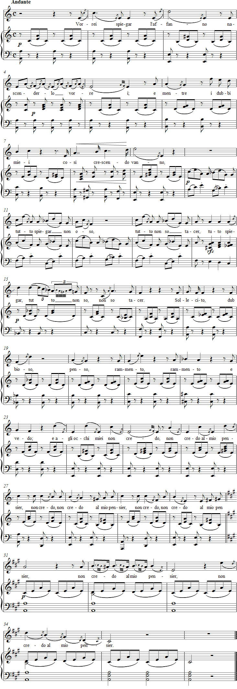

Vaccaj: Exercise 13a
Listen to the recording
Sheet music

Lyrics
Portamento I
Portamento I
I would like to hide it
and as I keep getting
more and more doubtful,
I cannot tell everything
and I cannot keep quiet about everything.
Solicitous and doubtful, I think,
reminisce and see,
and I don't believe my eyes,
I don't believe my thoughts.
Performance instructions
This exercise combines portamento practice with the principle of legato on open syllables, which Vaccaj introduced in the first two songs of his singing method. The Italian word portamento is important, among other things, in the sense of carrying or conveying. By practising the 19 portamenti in this exercise, the student can now "carry" the voice more conspicuously than before. Although Vaccaj warns against excessive use of portamento, the student must nevertheless "carry" the voice 37 times during the exercise by means of small notes and slurs.
The poem chosen by Vaccaj is highly emotional. The long appoggiaturas in the melody, in bars 6–7, 18–23 and elsewhere, further enhance this impression. Pauses between phrases are a prerequisite for all the appoggiaturas.
The 37 small notes and slurs appear in the song as follows:
- 7 between seconds (bars 6, 20, 26, 27, 28, 33, 34)
- 6 between thirds (4, 4, 4, 4, 34, 34)
- 5 between fourths (4, 4, 4, 14, 34)
- 5 between fifths (12, 25, 29, 30, 32)
- 9 between sixths (1, 2, 11, 13, 16, 19, 21, 24, 26)
- 4 between sevenths (2, 3, 23, 24)
- 1 between octaves (9)
Note the missing melismas in bars 11–13. One can only wonder why Vaccaj omits the slur between the first two melismas in bar 4, between the notes a second apart in bar 7, between the notes a third apart in bar 15, and between the notes a second apart in bars 21 and 22.
Vorrei spiegar is a seven-syllable poem with a varying pattern of stress, which Vaccaj has nevertheless been unable to follow because of various difficulties. As a composition, the song is among the finest in Metodo pratico, and it is also the only exercise that begins in a minor key.
The small thirty-second note is a remnant of an older practice and could well be omitted. The slur, however, is necessary.
Practice suggestions
First practise the melody without the words and without the portamento slurs. Use the vowels u and o, which are best suited to the gentle tone production required by this song.
Familiarise yourself thoroughly with the text and its meaning. Read it aloud many times, bringing out all its emotion and sentimentality.
Then sing the Italian text legatissimo. You will notice that the voice spontaneously "carries" even through the octave leap in bar 9. The resonant double consonant in vanno also helps here; experiencing it can help you understand the use of portamento in music.
Another insight may come in bar 11 when you compare the legato in the three-note melisma on spiegar with the words tutto and oso, in which the final note receives a new syllable. The descending intervals should be equally closely connected in all three words. You can also try this in bar 13.
Initially, work on only a couple of phrases at a time. Truly "carrying" the voice requires a very high degree of concentration.
Ideas for interpretation
Note that Vaccaj reminds the singer to use a piano dynamic in bar 4.
The tempo of Vorrei spiegar must be calm enough to allow time for "carrying" the voice.
Forshufvud, G. 1994. Con lieve fiato. Lärarhandledning till Nicola Vaccajs Metodo pratico. Göteborgs universitetet.